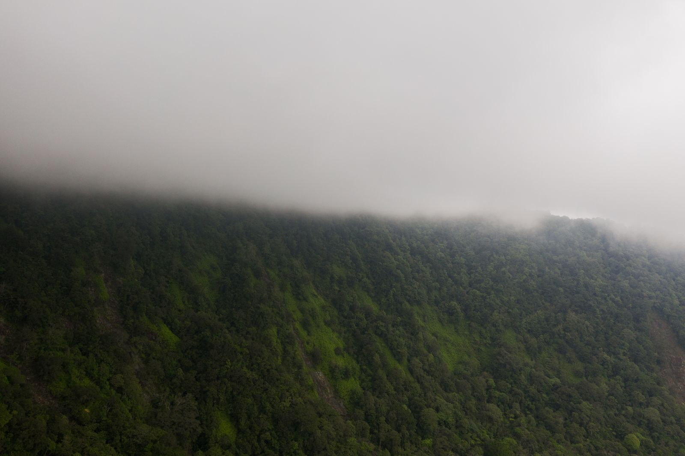
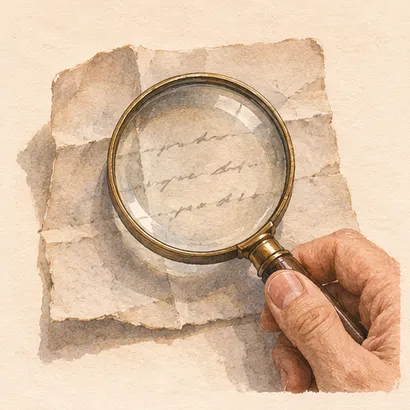

Territorio vivo
Un momento
para mirar
lo que vivimos.
Emociones, vínculos y caminos de cuidado. Una experiencia para explorar a tu ritmo.
Entrar al territorio Encontrar apoyoObservar abre
otra mirada.
Una situación puede despertar experiencias distintas. Aquí puedes descubrir palabras, explorar posibilidades y conocer formas de acompañamiento.
Pensado principalmente para hombres jóvenes Kogui de 18 a 28 años. Las lecturas recogen saberes del pueblo Kogui. Las situaciones que puedes explorar fueron creadas para aprender.
Cuatro recorridos · Ningún orden obligatorio
Elige por dónde empezar

01 · Reconocer
↗Reconocimiento y comprensión de las emociones.

02 · Cuidar
↗Regulación emocional, bienestar y autocuidado.
03 · Acompañamiento
↗Acompañamiento
Reconoce cuándo alguien necesita compañía y cómo ofrecerla.

04 · Sustancias
↗Sustancias psicoactivas y cuidado.
Reconoce presiones, explora decisiones y encuentra orientación.
Experiencia informativa y educativa. No realiza diagnósticos, no ofrece terapia ni sustituye la atención profesional.